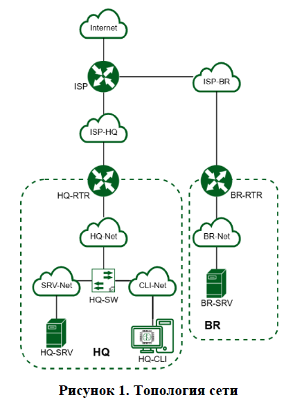
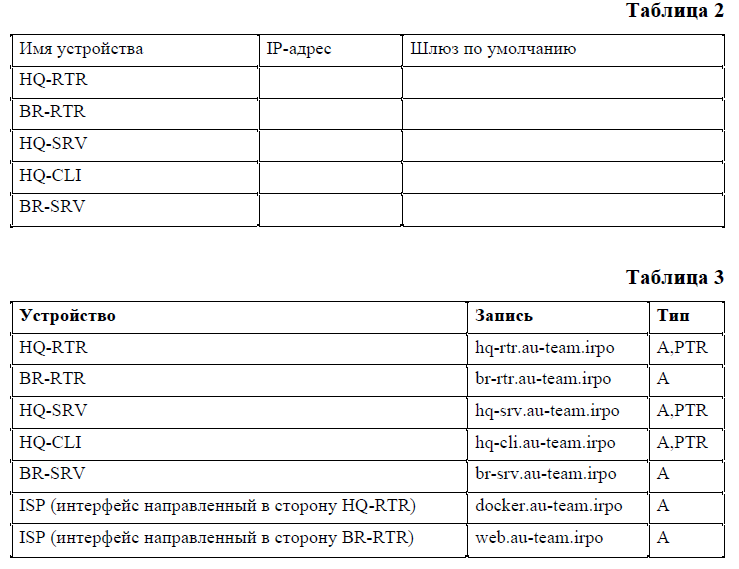

¶ Модуль 1. Настройка сетевой инфраструктуры
Необходимо разработать и настроить инфраструктуру информационно-коммуникационной системы согласно предложенной топологии (см. Рисунок 1)
Задание включает базовую настройку устройств:
- присвоение имен устройствам
- расчет IP-адресации
- настройку коммутации и маршрутизации
В ходе проектирования и настройки сетевой инфраструктуры следует вести отчет о своих действиях, включая таблицы и схемы, предусмотренные в задании.
По каждому пункту задания, требующего отчёт, составить текстовый документ, название которого должно содержать индекс пункта и краткое описание. Текстовый документ должен содержать текстовую информацию и может включать снимки экрана, кадрированные таким образом, чтобы относящаяся к выполнению задания информация на снимках была читаемой.
Итоговый отчет по окончании работы следует сохранить на диске рабочего места и задать имя файла – ФамилияУчастникаМодуль1 без учёта расширения

¶ ЗАДАНИЕ
¶ 1. Произведите базовую настройку устройств:
- Настройте имена устройств согласно топологии. Используйте полное доменное имя
- На всех устройствах необходимо сконфигурировать IPv4:
• IP-адрес должен быть из приватного диапазона, в случае, если сеть локальная, согласно RFC1918
• Локальная сеть в сторону HQ-SRV(VLAN 100) должна вмещать не более 32 адресов
• Локальная сеть в сторону HQ-CLI(VLAN 200) должна вмещать не менее 16 адресов
• Локальная сеть для управления (VLAN 999) должна вмещать не более 8 адресов
• Локальная сеть в сторону BR-SRV должна вмещать не более 16 адресов - Сведения об адресах занесите в таблицу 2, в качестве примера используйте Прил_3_О1_КОД 09.02.06-1-2026-М1
¶ 2. Настройте доступ к сети Интернет, на маршрутизаторе ISP:
- Настройте адресацию на интерфейсах:
- Интерфейс, подключенный к магистральному провайдеру, получает адрес по DHCP
- Настройте маршрут по умолчанию, если это необходимо
- Настройте интерфейс, в сторону HQ-RTR, интерфейс подключен к сети 172.16.1.0/28
- Настройте интерфейс, в сторону BR-RTR, интерфейс подключен к сети 172.16.2.0/28
- На ISP настройте динамическую сетевую трансляцию портов для доступа к сети Интернет HQ-RTR и BR-RTR.
¶ 3. Создайте локальные учетные записи на серверах HQ-SRV и BR-SRV:
Создайте пользователя sshuser
- Пароль пользователя sshuser с паролем P@ssw0rd
- Идентификатор пользователя 2026
- Пользователь sshuser должен иметь возможность запускать sudo без ввода пароля
Создайте пользователя net_admin на маршрутизаторах HQ-RTR и BR-RTR
- Пароль пользователя net_admin с паролем P@ssw0rd
- При настройке ОС на базе Linux, запускать sudo без ввода пароля
- При настройке ОС отличных от Linux пользователь должен обладать максимальными привилегиями.
¶ 4. Настройте коммутацию в сегменте HQ следующим образом:
- Трафик HQ-SRV должен принадлежать VLAN 100
- Трафик HQ-CLI должен принадлежать VLAN 200
- Предусмотреть возможность передачи трафика управления в VLAN 999
- Реализовать на HQ-RTR маршрутизацию трафика всех указанных VLAN с использованием одного сетевого адаптера ВМ/физического порта
- Сведения о настройке коммутации внесите в отчёт
¶ 5. Настройте безопасный удаленный доступ на серверах HQ-SRV и BR-SRV:
- Для подключения используйте порт 2026
- Разрешите подключения исключительно пользователю sshuser
- Ограничьте количество попыток входа до двух
- Настройте баннер «Authorized access only».
¶ 6. Между офисами HQ и BR, на маршрутизаторах HQ-RTR и BR-RTR необходимо сконфигурировать ip туннель:
- На выбор технологии GRE или IP in IP
- Сведения о туннеле занесите в отчёт.
¶ 7. Обеспечьте динамическую маршрутизацию на маршрутизаторах HQ-RTR и BR-RTR: сети одного офиса должны быть доступны из другого офиса и наоборот. Для обеспечения динамической маршрутизации используйте link state протокол на усмотрение участника:
- Разрешите выбранный протокол только на интерфейсах ip туннеля
- Маршрутизаторы должны делиться маршрутами только друг с другом
- Обеспечьте защиту выбранного протокола посредством парольной защиты
- Сведения о настройке и защите протокола занесите в отчёт.
¶ 8. Настройка динамической трансляции адресов маршрутизаторах HQ-RTR и BR-RTR:
- Настройте динамическую трансляцию адресов для обоих офисов в сторону ISP, все устройства в офисах должны иметь доступ к сети Интернет
¶ 9. Настройте протокол динамической конфигурации хостов для сети в сторону HQ-CLI:
- Настройте нужную подсеть
- В качестве сервера DHCP выступает маршрутизатор HQ-RTR
- Клиентом является машина HQ-CLI
- Исключите из выдачи адрес маршрутизатора
- Адрес шлюза по умолчанию – адрес маршрутизатора HQ-RTR
- Адрес DNS-сервера для машины HQ-CLI – адрес сервера HQ-SRV
- DNS-суффикс – au-team.irpo
- Сведения о настройке протокола занесите в отчёт.
¶ 10. Настройте инфраструктуру разрешения доменных имён для офисов HQ и BR:
- Основной DNS-сервер реализован на HQ-SRV
- Сервер должен обеспечивать разрешение имён в сетевые адреса устройств и обратно в соответствии с таблицей 3
- В качестве DNS сервера пересылки используйте любой общедоступный DNS сервер(77.88.8.7, 77.88.8.3 или другие)
¶ 11. Настройте часовой пояс на всех устройствах (за исключением виртуального коммутатора, в случае его использования) согласно месту проведения экзамена
